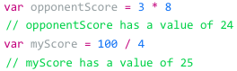
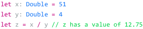

Operators
Notes
Homepage
Basic Arithmetic
Use the +, -, *, and / operators to perform basic math functionality

If explicitly declared, the constants or variables as Doubles, the results will have decimal values
